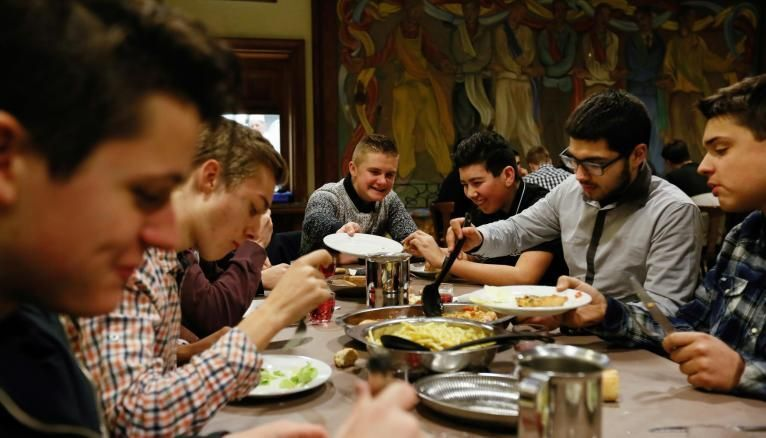
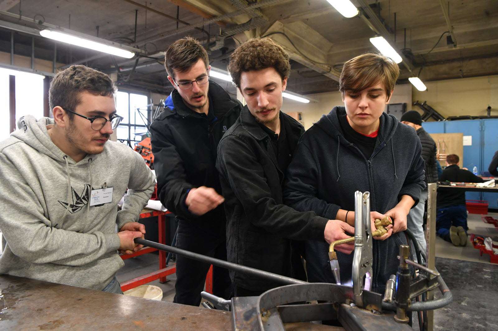
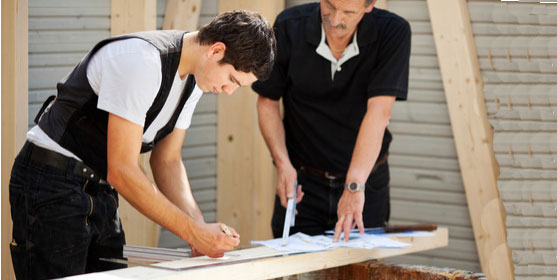
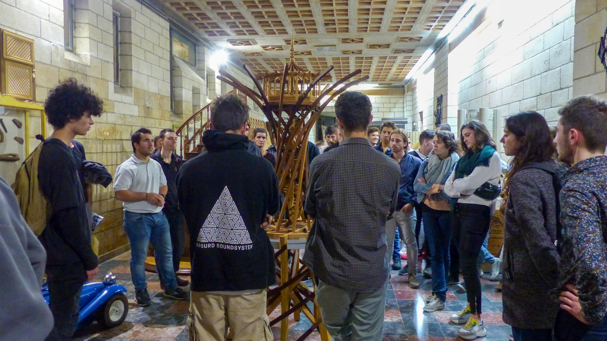

Devenir compagnon aujourd’hui

Se former chez les Compagnons, c'est vivre une expérience unique !

- S'épanouir : développer son potentiel au travers d'un métier concret et utile, en
- apprenant à son rythme dans un environnement de confiance.
- Partager : gagner en autonomie en vivant au sein d'une maison de compagnons
- Pratiquer des activités sportives et culturelles.
- et multiplier les expériences professionnelles et humaines.

- Les métiers d’aujourd’hui n’ont plus rien à voir avec ceux d’hier…
- Les Compagnons du Devoir proposent une formation gratuite en alternance
- dans 4 filières professionelles :
- Bâtiment & aménagement
- Technologies de l'industrie
- Matériaux souples
- Métiers du goût
- Maréchal-ferrant
- Tonnelier
Il y a donc :


- Pour devenir Compagnon, il faut préalablement postuler en tant qu’aspirant en réalisant un travail
- d'adoption qui est ensuite examiné par des membres de la corporation. Si cette première
- pièce convient, la communauté donne un avis favorable pour l'affiliation ou l'adoption.
- Selon leur niveau et leur âge, les jeunes de moins de 22 ans (garçons ou filles) ont le choix entre trois parcours :
- - l'apprentissage : après la 3e ou une année de lycée,
- vous pouvez préparez un métier en alternance comme apprenti pour obtenir en deux ou trois ans un premier diplôme professionnel (CAP ou bac pro selon le métier).
- - après un premier diplôme du métier de votre choix (CAP, bac pro, brevet professionnel, BTS),
vous pouvez vous perfectionner grâce au grand réseau des compagnons - - préparer en alternance un diplôme supérieur jusqu'à la licence professionnelle tout en faisant un tour de France.